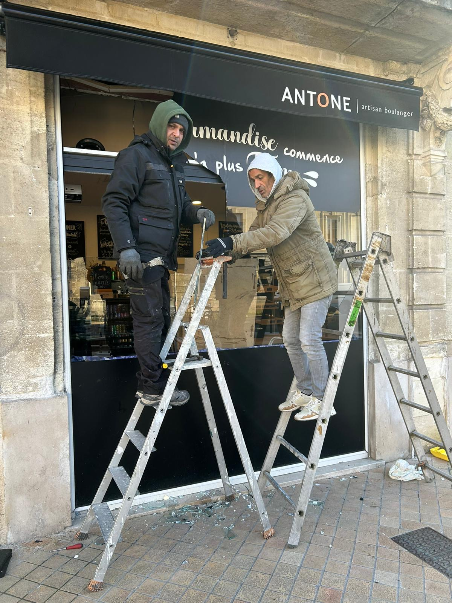

Ouverture de porte
Porte claquée, porte bloquée, serrure récalcitrante ou clé restée à l'intérieur : diagnostic du blocage et intervention sur l'accès.
De la porte claquée au remplacement de serrure, Abaca prend en charge les besoins courants de serrurerie ainsi que plusieurs solutions de protection et de fermeture.

Les services présentés ici reprennent les prestations de serrurerie annoncées par l'entreprise.
Porte claquée, porte bloquée, serrure récalcitrante ou clé restée à l'intérieur : diagnostic du blocage et intervention sur l'accès.
Remplacement de serrure, cylindre ou poignée lorsque le mécanisme est usé, endommagé ou à renouveler.
Installation de serrures multipoints et de solutions renforcées lorsque vous souhaitez améliorer la sécurité d'une porte.
Pose de bloc-porte blindé et interventions sur les accès renforcés, notamment après une tentative d'effraction.
Fermeture ou sécurisation temporaire d'un accès endommagé afin de limiter le risque en attendant une réparation définitive.
Installation, entretien et dépannage de rideaux métalliques, grilles de défense et volets roulants.
Pour qualifier la situation, indiquez au téléphone le type de porte, si elle est claquée ou verrouillée et, si possible, la marque ou une photo de la serrure.
Les références disponibles comprennent notamment Métalux, Fichet, Vachette, Bricard et Picard. Le choix dépend du besoin et de la configuration de la porte.

Porte claquée ou blindée, serrure bloquée, clé perdue ou coincée, changement de cylindre, réparation et pose de nouvelle serrure.
Mise en sécurité temporaire, serrure multipoints, bloc-porte blindé, grilles de défense et solutions de fermeture pour les commerces.
Le délai est généralement estimé autour de 40 minutes selon le planning, la circulation et les opérations en cours. Il reste indicatif.
Devis annoncé gratuit et sans engagement, tarif annoncé comme maintenu, avec une garantie de travaux indiquée pendant un an.
Porte, serrure, cylindre, fermeture ou sécurisation : appelez pour obtenir les informations adaptées à votre situation.